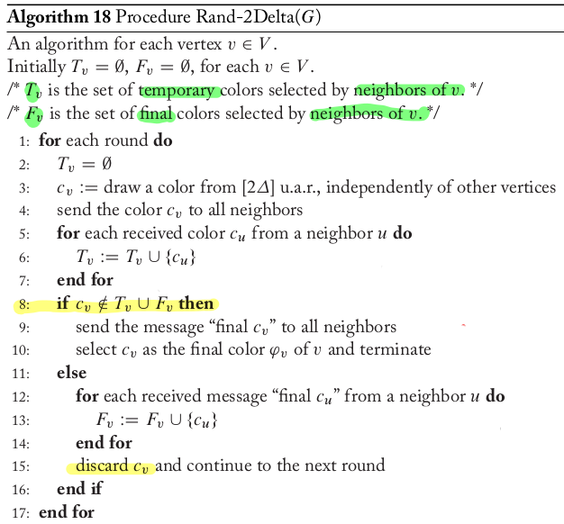
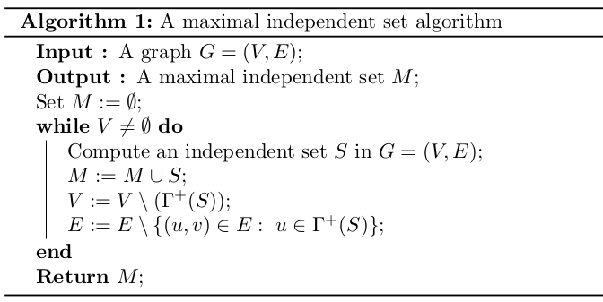
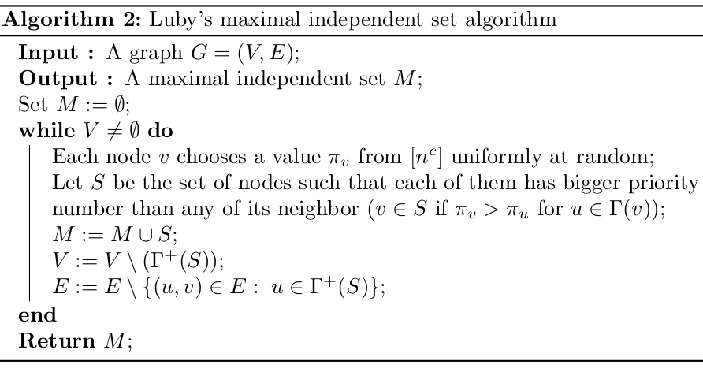
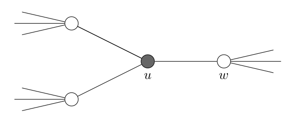
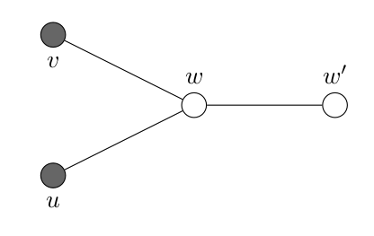

ADRC - Lesson 18
Indice
Nella precedente lezione sono stati descritti dei protocolli totalmente deterministici per il problema della colorazione distribuita di grafi. In questa lezione verranno introdotti ed analizzati dei protocolli probabilistici.
Randomized Distributed Graph Coloring
Un approccio probabilistico molto usato per risolvere questa tipologia di problemi distribuiti (non solo il Graph Coloring, ma per esempio anche il Maximal Independent Set) è il seguente:
il protocollo procede per fasi, dove in ciascuna di esse ogni nodo sceglie casualmente un valore da un insieme appropriato di colori.
In base al colore scelto, e a quello scelto dai propri vicini, ogni nodo deve prendere la decisione finale di adottare il colore scelto e terminare il protocollo, oppure di continuare alla fase successiva.
Osservare che tutti i nodi che prendono una decisione finale formano un sottoinsieme della soluzione finale.
Perciò basta rimuovere i nodi che hanno terminato il protocollo, e procedere alla stessa maniera però sul grafo residuo.
Un requisito importante che una soluzione parziale deve necessariamente avere è che essa non solo deve essere corretta nel relativo sottoinsieme di vertici, ma anche rispetto
all'unione di tutti i sottoinsiemi rimossi nelle fasi successive.
Il protocollo termina quando verranno rimossi tutti i nodi dal grafo, ovvero quando tutti i nodi avranno scelto definitivamente il proprio colore.
Entriamo ora nel merito del protocollo Rand-\(2\Delta\) che calcola in maniera distribuita una \(2\Delta\) colorazione di un grafo \(G\) in accordo all'approccio precedente, dove \(\Delta\) è il grado massimo di \(G\).
Ad ogni fase, ogni nodo \(v\) campiona u.a.r. un colore \(c_v\) dall'insieme \(\left[2\Delta\right] = \lbrace 1, 2, ..., 2\Delta \rbrace\).
Indichiamo con \(F_v\) l'insieme dei colori scleti definitivamente dai vicini di \(v\), e con \(T_v\) l'insieme dei colori scelti (temporaneamente) dai vicini di \(v\) nel corrente round.
Se \(c_v \notin F_v \cup T_v\), allora \(c_v\) diventa il colore definitivo di \(v\), e in tal caso il nodo termina il protocollo.
Altrimenti \(v\) scarta \(c_v\) e continua alla fase successiva.

Figura 1: Protocollo Rand-\(2\Delta\).
Lemma 1 (Correttezza)
Se tutti i nodi terminano, allora il protocollo Rand-\(2\Delta\) calcola una \(2\Delta\)-colorazione del grafo \(G\) in input.
Proof: sappiamo con certezza che la colorazione finale \(\varphi\) è una \(2\Delta\)-colorazione, perché per costruzione tutti i colori scelti dai nodi sono nell'insieme \(\left[2\Delta\right]\), perciò serve solamente dimostrare che la colorazione \(\varphi\) è una colorazione valida.
Consideriamo una coppia di nodi vicini \(u,v\), e supponiamo per assurdo che alla fine \(\varphi(u) = \varphi(v)\). Certamente i nodi \(u,v\) non possono aver terminato il protocollo nello stesso round, in quanto sarebbe accaduto che \(c_u \in T_u\) e \(c_v \in T_v\) (vedi algoritmo
riga 8). Allora siano \(i,j\) i round in cui i nodi \(u,v\) terminano il protocollo rispettivamente, ed assumiamo senza perdita di generalità che \(i < j\) (ovvero \(u\) termina prima di \(v\)). Allora dal round \(i\) in poi, il colore definitivo \(varphi(u)\) sarà presente nell'insieme \(F_v\). Perciò, per costruzione dell'algoritmo, il colore definitivo \(\varphi(v)\) scleto al tempo \(j\) certamente non appartiene a \(F_v\), e quindi \(\varphi(u) \neq \varphi(v)\), contraddicendo l'ipotesi iniziale \(\square\).
Lemma 2 (Time)
Durante l'esecuzione del protocollo Rand-\(2\Delta\) tutti i nodi terminano la loro esecuzione entro \(O(\log{n})\) rounds con alta probabilità \(1 - \frac{1}{n^c}\), per un \(c > 0\) sufficientemente grande.
Proof: consideriamo un qualsiasi nodo \(v \in V\) è calcoliamo la probabilità che \(v\) termini nel round \(i\) condizionato al fatto che non ha terminato prima, per ogni \(i > 0\). Osserviamo che \(\vert T_v \cup F_v \vert \leq \Delta\) perché ogni vicino di \(v\) contribuisce con al più un colore a questo insieme, e inoltre \(\vert N(v) \vert \leq \Delta\). Di conseguenza \(v\) ha a disposizione almeno \(\Delta\) colori validi per la colorazione finale nell'insieme \(\left[ 2\Delta \right] \setminus (T_v \cup F_v)\). Perciò la probabilità che \(v\) scelga un colore valido per la colorazione finale sarà almeno \[ \mathcal{P}(c_v \notin T_v \cup F_v) = \frac{\vert \left[ 2\Delta \right] \setminus (T_v \cup F_v) \vert}{\vert \left[ 2\Delta \right] \vert} \geq \frac{\Delta}{2\Delta} = \frac{1}{2} \]
Quindi, assumiamo che \(v\) non termina prima del round \(i\), la probabilità che termini al round \(i\) è almeno \(1/2\), indipendentemente dagli altri nodi. \[ \mathcal{P}(v \mbox{ termina al tempo } i \vert v \mbox{ non termina prima di } i) \geq \frac{1}{2} \]
Viceversa, la probabilità che un dato nodo \(v\) non termina entro il passo \(i\) sarà al più \(2^{-i}\). Perciò facendo union bound possiamo calcolare la probabilità che esista un nodo \(v\) che entro il tempo \(i\) non ha ancora finito come segue
\begin{align*} \mathcal{P}(\exists v : v \mbox{ non ha finito al tempo } i) &= \mathcal{P}(\bigcup_{v \in V} \lbrace v \mbox{ non ha finito al tempo } i \rbrace)\\ &\leq \sum_{v \in V} \mathcal{P}(v \mbox{ non ha finito al tempo } i)\\ &\leq \frac{n}{2^i} \end{align*}Per \(i = (c+1)\cdot\log_2{n}\) avremo che dopo \(i\) round tutti i nodi terminano con probabilità
\begin{align*} &\mathcal{P}(\forall v : v \mbox{ termina entro il tempo } (c+1)\cdot\log_2{n})\\ = &\mathcal{P}(\not\exists v : v \mbox{ non ha finito al tempo } (c+1)\cdot\log_2{n})\\ \geq &1 - \frac{n}{2^{(c+1)\cdot\log_2{n}}} = 1 - \frac{n}{n^{c+1}} = 1 - \frac{1}{n^c} \;\;\; \square \end{align*}
Maximal Independent Set
Dato un grafo \(G = (V, E)\), un suo Independent Set è un sottoinsieme di vertici \(M \subseteq V\) tale non contiene nessuna coppia di nodi adiacenti. Trovare un independent set massimo è noto essere un problema NP-Hard. Un independent set massimale invece è un independent sat \(M\) il quale non può essere ingrandito ulteriormente con l'aggiunta di un qualsiasi altro nodo in \(V \setminus M\), ovvero \(M\) è un massimo locale.
Luby’s Maximal Independent Set Algorithm
Consideriamo il seguente algorimo semplice per il calcolo di un independent set.

Figura 2: A maximal independent set algorithm.
Con \(\Gamma(v)\) si intende il vicinato \(N(v)\) di un nodo, perciò \(\Gamma(S)\) (per un certo sottoinsieme \(S \subset V\)) indica il vicinato \(N(S)\)
di tale sottoinsieme, ovvero \(N(S) = (\bigcup_{v \in S}N(v)) \cap (V \setminus S)\).
Invece con \(\Gamma^+(S)\) si intende \(S\) unito il suo vicinato, ovvero \(\Gamma^+(S) = \Gamma(S) \cup S\).
È facile dimostrare che l'insieme \(M\) ritornato dal precedente algoritmo è un independent set massimale.
Sicuramente \(M\) è un independent set in quanto ogni volta che aggiungo un \(S\) mi assicuro di rimuovere da \(V\) anche tutti i vicini in \(\Gamma(S)\),
perciò qualsiasi altro nodo inserirò in futuro non avrà vicini in \(S\).
Infine \(M\) è massimale in quanto ogni nodo in \(V\) o viene selezionato per appartenere in \(S\), oppure viene rimosso perché appartiene a \(\Gamma(S)\).
Perciò se aggiungo in \(M\) un altro nodo che sta in \(V \setminus M\) creerebbe un arco all'interno di \(M\).
Ora vogliamo sapere come poter calcolare un independet set \(S\) ad ogni interazione.
Il calcolo di \(S\) è il task distribuito che ci interessa.
Introduciamo due possibili approcci.
Come prima cosa potremmo usare la solita tecnica del "lancio di moneta".
Ogni nodo lancia una moneta, e dopodichè invia il suo risultato a tutto il suo vicinato (e ne riceve ovviamente i rispettivi risultati).
Se un nodo \(u\) ottiene TESTA (1) e tutti i suoi vicini ricevono CROCE (0), allora aggiungiamo \(u\) all'insieme \(S\).
Come è facile intuire, così facendo \(S\) sarà un insieme indipendentente.
Osserviamo che se le probabilità di ottenere TESTA e CROCE sono uguali, allora la probabilità che \(u\) appartenga ad \(S\) sarà
pari a \((1/2)^{\vert \Gamma(u) \vert + 1}\).
Perciò in media \(S\) avrà \(\sum_v (1/2)^{\vert \Gamma(v) \vert + 1}\) nodi.
Se invece sbilanciamo la probabilità di ottenere TESTA pari a \(p\), avremo che la probabilità che \(u\) appartenga ad \(S\)
sarà pari a \(p(1-p)^{\vert \Gamma(u) \vert}\), la quale potrebbe essere nettamente maggiore di \((1/2)^{\vert \Gamma(u) \vert + 1}\).
Il problema di questo approccio è che il numero di iterazioni affinché si termini il protocollo potrebbe diventare davvero motlo grande.
Un altro approccio potrebbe essere quello in cui ogni nodo \(u\) sceglie un valore u.a.r. \(\pi_u \in \left[ R \right]\),
e se \(u\) ha il valore \(\pi_u\) maggiore rispetto a quello di tutti i suoi vicini, allora \(u\) viene inserito in \(S\).
Osserviamo che se l'insieme in cui scegliere i valori è \(\lbrace 0, 1 \rbrace\), allora questo metodo equivale al lancio di moneta equa.
La probabilità che esistano due nodi vicini che scelgono lo stesso valore è
\[
\mathcal{P}(\exists (u,v) \in E : \pi_u = \pi_v) \leq \sum_{(u,v) \in E} \mathcal{P}(\pi_u = \pi_v) = \frac{\vert E \vert}{R}
\]
Perciò se \(R = cn\), per qualche \(c\) sufficientemente grande, allora otterremo che con alta probabilità non ci sono due nodi con la stessa etichetta.
Sulla base di questa idea, introduciamo il protocollo probabilistico per il calcolo di un independent set massimale noto come Luby’s algorithm.

Figura 3: Luby’s Maximal Independent Set Algorithm
Analysis of Luby’s Algorithm
Verrà dimostrato che l'algoritmo di Luby richiede in media solamente \(O(\log{n})\) iterazioni per completare.
In realtà è possibile dimostrarne anche l'alta probabilità.
Lemma Il numero medio di archi rimossi in una iterazione è almeno \(\vert E \vert / 2\), dove \(\vert E \vert\) denota l'insieme di archi rimanenti nel grafo.
Ciò che ci suggerisce questo lemma, è che sostanzialmente ad ogni iterazione il numero di archi si dimezza.
Alla fine non rimarranno archi, e con un'ultima iterazione inseriamo tutti gli ultimi nodi restanti.
Dato che ci possono essere al più \(n(n-1)/2\) archi, in media in tempo \(O(\log{n})\) il protocollo terminera.
L'idea della dimostrazione è la seguente: Consideriamo la seguente figura, e assumiamo che il nodo \(u\) venga selezionato per appartenere in \(S\).

Figura 4: \(u \in S\) e gli archi da rimuovere.
Certamente (per definizione dell'algoritmo) sia \(u\) che \(\Gamma(u)\) verranno rimossi da \(V\), e di conseguenza verranno rimossi anche gli archi incidenti a \(u\) e ai nodi in \(\Gamma(u)\). Osservare che il numero di archi incidenti ai nodi in \(\Gamma(u)\) è almeno il numero di arhci incidenti a \(u\). Verrà mostrato che sarà sufficiente contare solamente gli archi incidenti a \(\Gamma(u)\).
Proof: Siano il \(u\) inserito in \(S\) a un certo round, e si \(w \in \Gamma(u)\) un suo vicino. Per definizione dell'algoritmo verranno rimossi tutti gli archi incidenti a \(w\) alla fine di questo round. Nulla vieta che possa accadere che esista un altro nodo \(v \in S\) adiacente a \(w\).
Consideriamo un arco \((w,w')\) tale che \(w' \notin \Gamma(S)\). Certamente l'arco \((w,w')\) verrà rimosso per colpa sia dell'appartenenza di \(u\) in \(S\), sia per colpa di \(v\).

Però noi vogliamo contare la rimozione di \((w, w')\) una sola volta. Perciò, senza perdita di generalità, assumiamo che \(\pi_u \geq \pi_v\) e affermiamo che \((w, w')\) è stato rimosso perché "\(u\) salva \(w\)" . In altre parole diciamo che "\(u\) salva \(w\)" se \(u \in S\), \(w \in \Gamma(u)\), e se \(\pi_u\) è l'etichetta massima tra quelle dei nodi in \(\Gamma^+(u) \cup \Gamma^+(w)\).
Notare che l'arco \((w, w')\) potrebbe essere rimosso anche perché esiste un \(u' \in S\) tale che "\(u'\) salva \(w'\)". L'importante è che però conto la rimozione di \((w, w')\) al più due volte.
La probabilità che "\(u\) salva \(w\)", ovvero la probabilità che \(\pi_u\) sia il valore maggiore in \(\Gamma^+(u) \cup \Gamma^+(w)\) è esattamente \(1/(d(u) + d(w))\), dove \(d(\cdot)\) indica il grado del nodo.
Indichiamo la v.a. binaria \(X_{u \rightarrow w'}\) che vale 1 se l'arco \((w, w')\) è rimosso per colpa di \(u\), e 0 altrimenti. La sua media sarà \[ \mathbb{E}\left[ X_{u \rightarrow w'} \right] = \mathcal{P}(X_{u \rightarrow w'} = 1) = \frac{1}{d(u) + d(w)} \] Indichiamo invece con \(X_{u \rightarrow \Gamma(w)}\) il archi incidenti a \(w\) rimossi per colpa di \(u\). La sua media sarà \[ \mathbb{E}\left[ X_{u \rightarrow \Gamma(w)} \right] = \sum_{w' \in \Gamma(w)} \mathbb{E}\left[ X_{u \rightarrow w'} \right] = \frac{d(w)}{d(u) + d(w)} \]
Perciò sapendo che la rimozione di ogni arco la conto al più due volte, e considerando ogni arco \((u,w) \in E\), posso dire che il mediamente il numero di archi rimossi sarà
\begin{align*} \frac{1}{2} \sum_{(u,w) \in E} \mathbb{E}\left[ X_{u \rightarrow \Gamma(w)} \right] + \mathbb{E}\left[ X_{w \rightarrow \Gamma(u)} \right] &= \frac{1}{2} \sum_{(u,w) \in E} \left( \frac{d(w)}{d(u) + d(w)} + \frac{d(e)}{d(u) + d(w)} \right)\\ &= \frac{1}{2} \sum_{(u,w) \in E} 1 = \frac{ \vert E \vert }{2} \;\;\; \square \end{align*}